「Nimono」は、PC 内のフォルダーをスキャンして似た画像を自動的にグルーピングし、不要な重複画像などを比較・整理するためのデスクトップアプリケーションです。
大量の写真やイラストの中から、「ほとんど同じ画像」や「リサイズ・再圧縮された類似画像」を見つけ出し、簡単な操作で比較・削除できます。
.jpg, .jpeg).png).bmp).gif).tiff, .tif).webp)NOTE:
Windows、Program Files、$Recycle.Bin（ゴミ箱）、System Volume Information
などの主要なシステムフォルダーは、安全およびパフォーマンス確保のため自動的にスキャン対象から除外されます。
まずはスキャン対象のフォルダーを登録します。
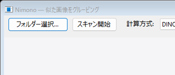
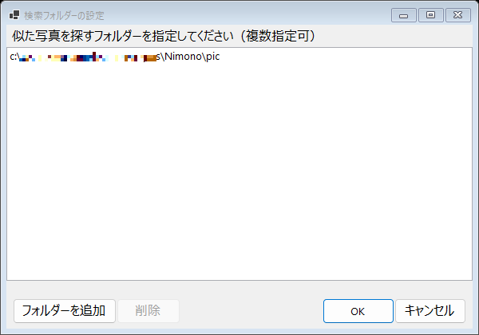
目的に合わせて計算方式としきい値を設定します。
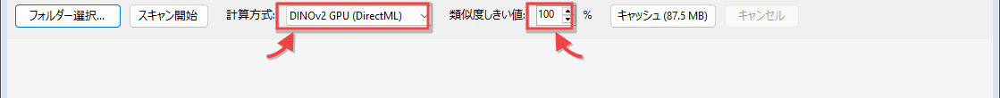
85% 〜 90% 付近に設定して試してみてください。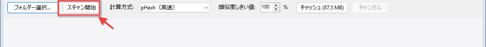
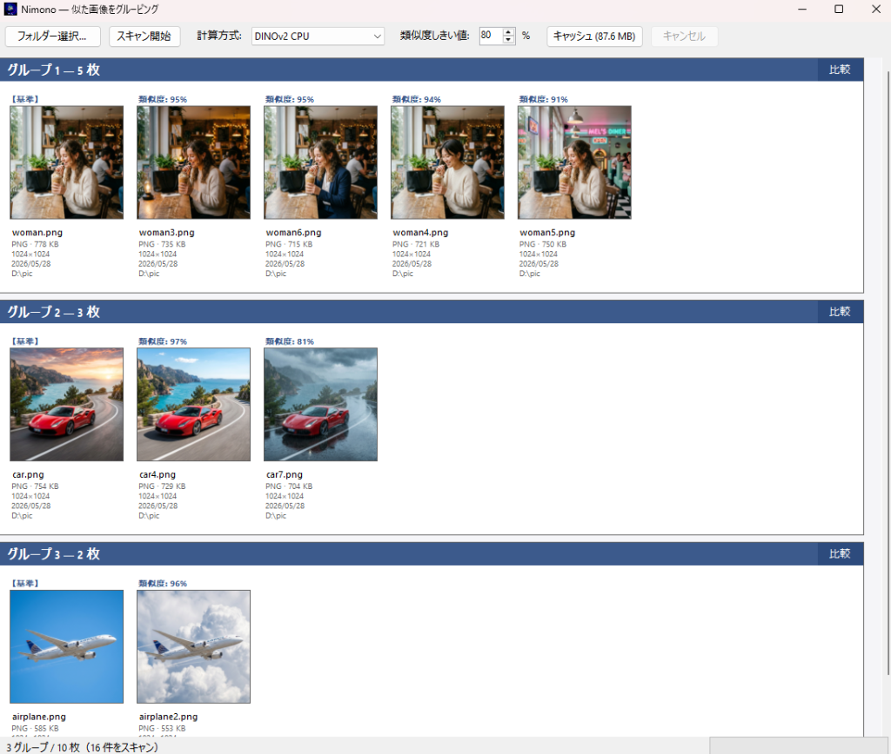
スキャンが完了すると、類似画像がグループ化されて一覧表示されます。
各グループの右上にある 「比較」 ボタンをクリックすると、詳細な比較画面が開きます。
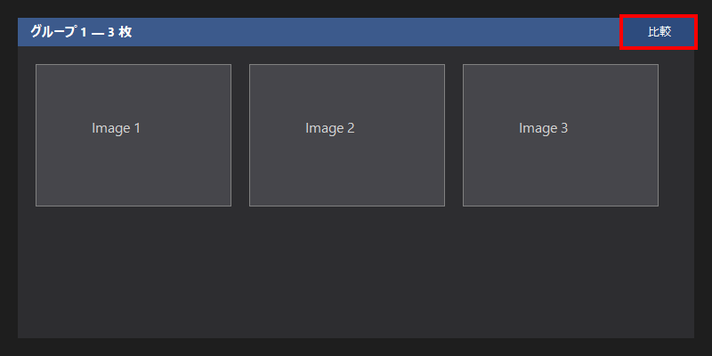
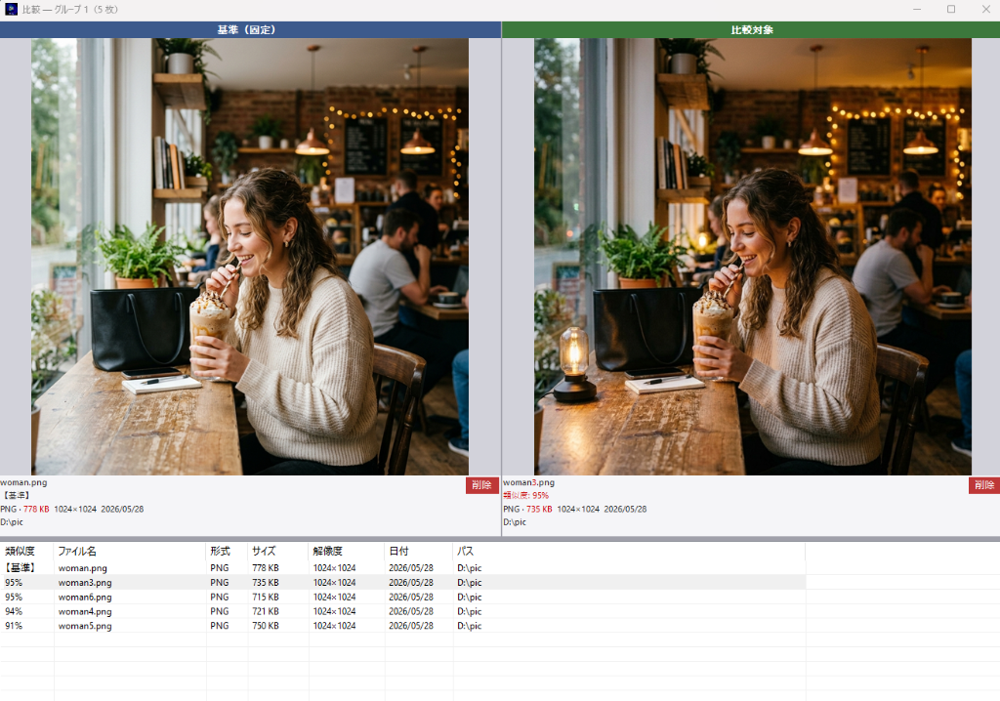
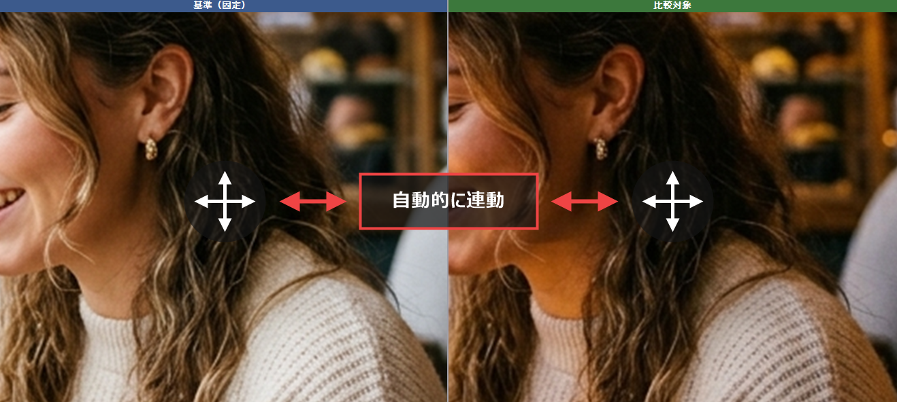
画像下部の情報エリアには、以下のファイル情報が表示されます。
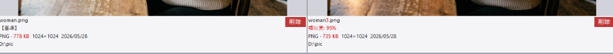
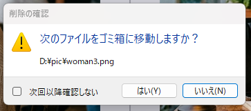
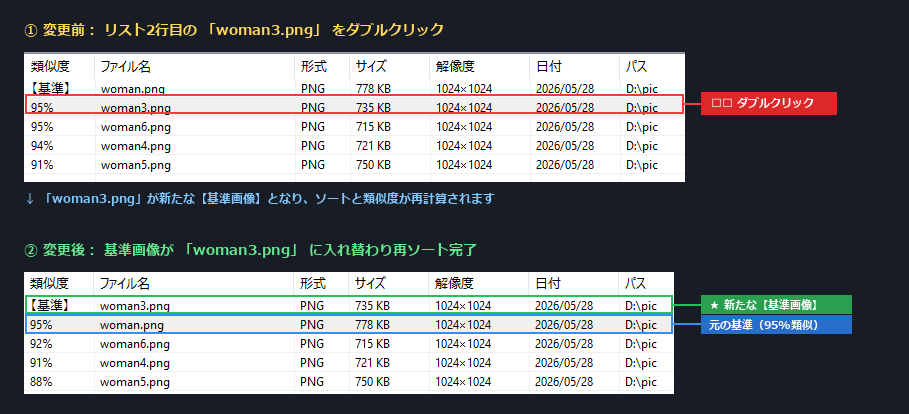
画像表示部やリスト部で右クリックすると、以下の操作が可能です。
キーボードを使用して、比較対象（右側）の画像を素早く切り替えることができます。
Home : グループ内の最初の比較対象（2番目の画像）を表示End : グループ内の最後の画像を表示PageUp / PageDown : 表示する比較対象をページ単位で切り替えDINOv2 方式を使用するには、専用のAIモデルファイル（model.onnx）が必要です。
計算方式で「DINOv2 CPU」または「DINOv2 GPU (DirectML)」を初めて選択した際に、自動的にセットアップ画面が表示されます。
model.onnx
を直接指定することも可能です。TIP (GPU の使用について):
計算方式で「DINOv2 GPU (DirectML)」を選択すると、グラフィックボードを利用して高速にAIスキャンを実行できます。これを利用するには、DirectX 12 に対応した
GPU と、最新のグラフィックドライバー が必要です。動作しない場合は「DINOv2 CPU」をご利用ください。
ウィンドウのサイズや位置、選択したフォルダーリスト、画像の回転状態などの設定は、以下のファイルに自動的に永続化されます。
%LOCALAPPDATA%\Nimono\settings.json
（エクスプローラーのアドレスバーに上記パスを貼り付けるとフォルダーが開きます）
 Nimono
Nimono